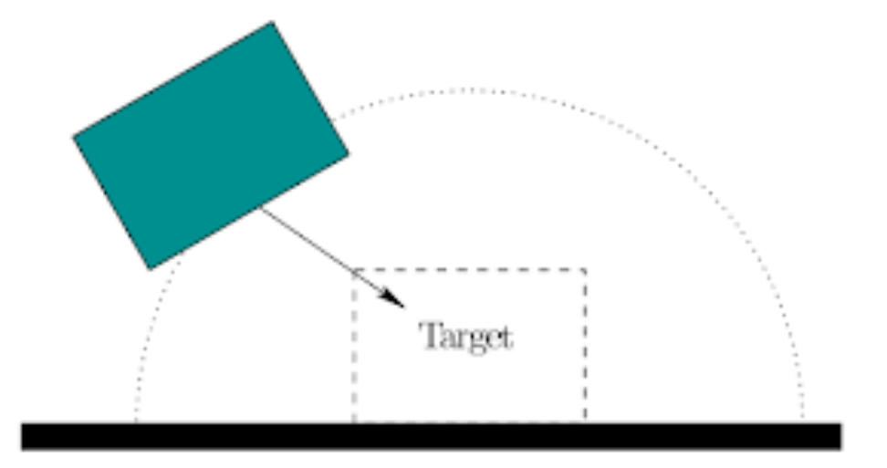
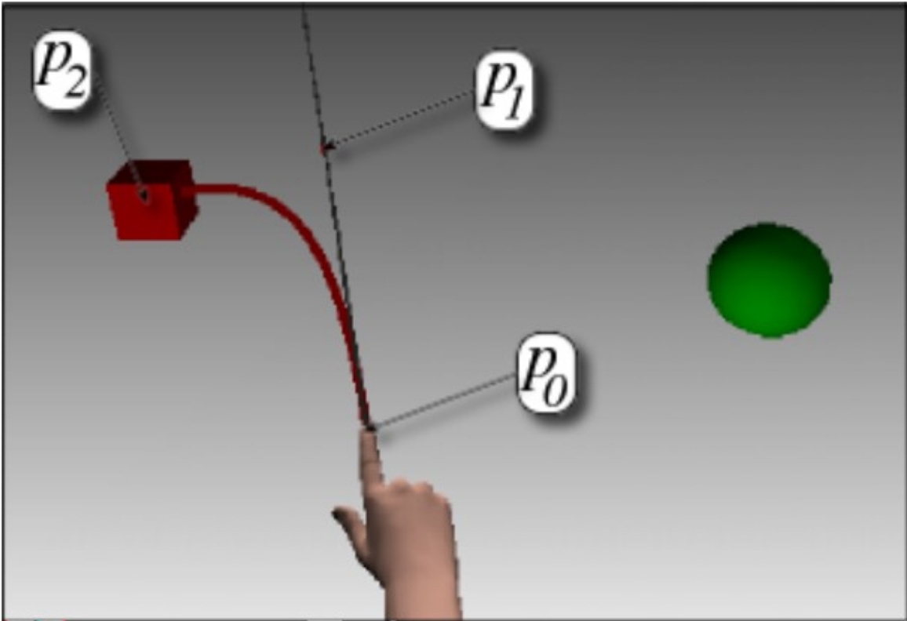
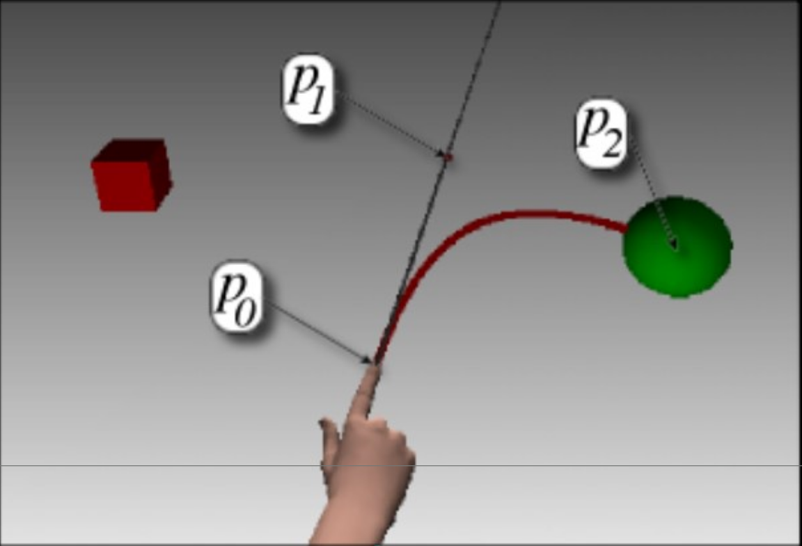
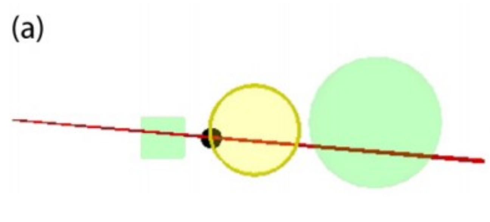
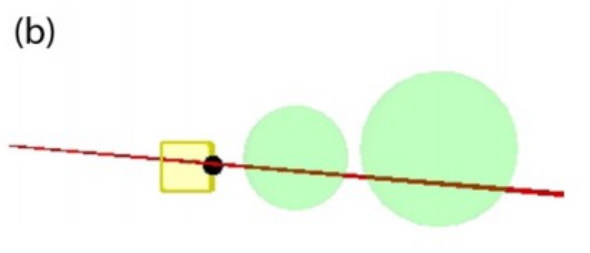
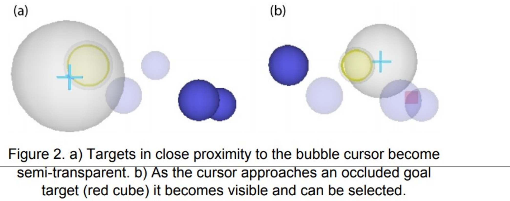
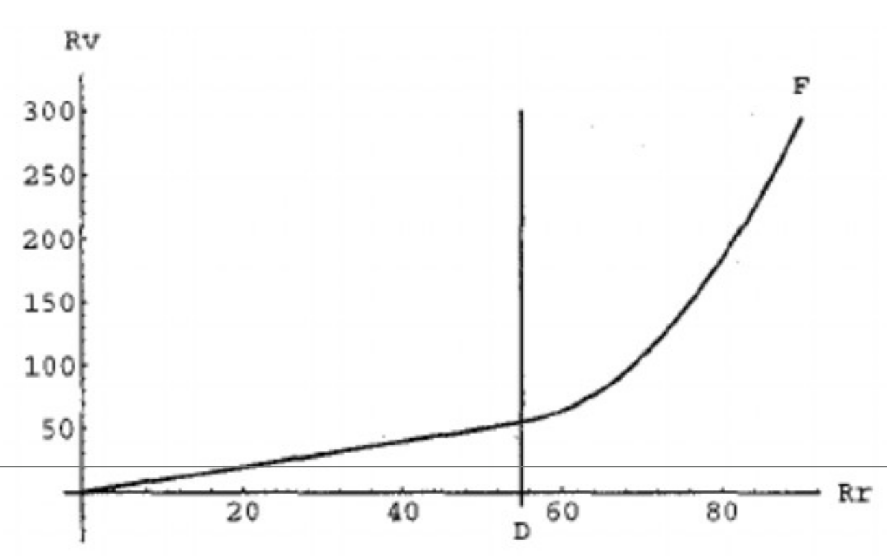

CPSC 4110/6110
Interaction Design Is a Design Problem, Not a Simulation Problem
Any interaction mechanism from the real world can be simulated in VR
But should we always do this?
Consider: Simulating a full physical keyboard in VR vs. using voice input or a virtual keyboard with controller pointing
A framework for evaluating every interaction design tradeoff
We'll use this triangle throughout the lecture to evaluate every technique we encounter
The comfortable interaction volume isn't a sphere — it's a truncated cone in front of the torso, biased downward
Chest to waist, within arm's length
Frequent, precise actions
Extended reach, shoulder height or below knee
Occasional actions
Behind head, above reach, at floor level
Avoid or use indirect input
Design implications:
Meta's design guidelines codify these zones — your Quest guardian boundary defines the horizontal limits
Avoid techniques that require continuously holding arms up or out
🦍
Requires "gorilla arms" to use comfortably
Design principle: Keep frequent interactions at waist or lap level when possible
The Motor System Foundation
To design good interactions, we need to understand how humans execute actions
Motor control explains why some techniques feel natural and others feel broken
A motor program is a pre-structured set of motor commands that can be executed as a unit, without requiring conscious attention to each individual movement
Examples across life:
Every VR user arrives with decades of motor programs — your design can leverage or conflict with them
Try it: Mime signing your name with your dominant hand. Now try with your non-dominant hand. The difference is motor programs — one hand has thousands of hours of practice, the other doesn't.
Execute the entire motion without correction
Fast but inaccurate — e.g., throwing a dart
Initiate motion, refine using sensory feedback
Slower but precise — e.g., threading a needle
XR challenge: VR often breaks the feedback loop — no haptics, latency in visual feedback, missing proprioceptive cues. This degrades motor performance.
The foundational model of aimed movement — predicts how long it takes to select a target
MT = a + b × log2(D / W + 1)
a and b are empirically measured constants — they differ by input device, user population, and context
The log term is called the Index of Difficulty (ID), measured in bits:
ID = log2(D / W + 1)
Example:
Target 20cm away, 2cm wide:
ID = log2(20/2 + 1) = 3.46 bits
Same target doubled to 4cm wide:
ID = log2(20/4 + 1) = 2.58 bits
Doubling size reduced difficulty by ~25%
The time it takes to start moving — reaction time, cognitive processing
A device with high a is slow to initiate (e.g., gaze dwell selection has a high intercept because of the dwell timer)
How much each additional bit of difficulty costs in time
A device with high b degrades rapidly as tasks get harder (e.g., head-based pointing has a steep slope because head movements are imprecise)
Throughput (1/b, in bits/sec) is the standard metric for comparing input devices — higher is better. A mouse has ~4 bits/s; VR controller raycasting is typically ~2–3 bits/s.
Why Fitts' Law matters more in VR than on a desktop:
Design implication: Every selection technique we'll study works by changing the effective D or W in the user's favor — making targets effectively larger or closer
Try it: Interactive Fitts' Law demo — experience how target size and distance affect selection time with a mouse, then imagine how much harder it is in VR
Some motor programs are hard to learn because of complex remapping between action and effect
When using a computer, we regularly use a motor program with complex remapping. What is it?
A mouse!
Remapping in VR can change:
Closed-loop motor control needs feedback to succeed
This is where motor program theory meets practical XR implementation
Successful VR applications teach interactions incrementally, building on motor programs established earlier
Half-Life: Alyx — the canonical example:
Each step builds on motor programs from the previous step — by the time complex interactions are needed, the foundational programs are already learned. Apply this to your student projects.
Categorizing What Users Do in XR
Now that we understand the human side, let's categorize what users actually do in XR
Choosing an object or target to initiate an interaction
The most studied — and arguably the hardest — interaction problem in XR
Modifying a selected object's properties: position, rotation, scale, or state
Requires mapping between user actions and object changes
Positioning an object at a target location with desired orientation
The inverse of selection — aided by snap zones and basins of attraction
Note: Locomotion/navigation is sometimes considered a fourth major interaction type — we'll cover it separately
The tools users use to perform interactions
How many independent axes does each input device control?
Controllers / Hands
Position (x,y,z) + Rotation (pitch, yaw, roll)
Gamepad Stick
2 axes per stick + buttons
Gaze Direction
Yaw + Pitch (no roll, no position)
DoF mismatches between input and task require remapping — connecting back to Part II
Selection initiates an interaction — it can also be the entire action (e.g., selecting an object to delete it)
Having selected an object, you can now modify it
Many "using" actions require remapping (e.g., flashlight toggle mapped to trigger). Purely physics-based interactions (e.g., pushing a button) usually don't.
In reality, affordances are communicated through material, shape, weight, and texture — none of which VR delivers well
How do you signal "this is grabbable" or "this slides but doesn't rotate"?
XRI connection: XRInteractableVisual components handle hover/select state changes automatically
The inverse of selection — putting something down precisely (e.g., spark plug into a socket, furniture into a room)
Objects snap to valid placement locations when brought nearby, reducing precision requirements
In Unity XRI: XRSocketInteractor defines where objects can be placed and how they align

Object entering the basin (dotted region) snaps toward the target
Every interaction follows a lifecycle — and your feedback design should match each state
Idle → Hover → Select → Activate → Release → Idle
| State | User Action | Feedback | XRI Event |
|---|---|---|---|
| Idle | Nothing targeted | Affordance cues (glow, animation) | — |
| Hover | Ray or hand enters range | Highlight, hand pose change, audio cue | hoverEntered |
| Select | Trigger press, pinch, or grab | Haptic pulse, visual snap, sound | selectEntered |
| Activate | Secondary action while holding | State change (toggle, fire, open) | activated |
| Release | Let go of trigger/hand | Return to idle state, physics takes over | selectExited |
Design distinct feedback for each state — if hover and select look the same, users can't tell what they've done
Techniques Evaluated Through the Design Triangle
We'll use two lenses to compare every technique:
Effectiveness, learnability, and comfort tradeoffs
How does the technique change effective target distance (D) and width (W)?
Good selection techniques make targets effectively larger or closer
User's hand or controller physically contacts the object
Natural but range-limited
A ray extends from controller or hand to select at distance
Good range, precision challenges
Volume-based, progressive refinement, or world-in-miniature approaches
Specialized for difficult scenarios
The most natural interaction — and the primary input on Quest 3
Design triangle: High learnability (everyone knows how to grab things), moderate effectiveness (limited to arm's reach), moderate comfort (gorilla arm risk for overhead targets)
Variations on the same core concept, each optimizing for different scenarios
Fitts' Law insight:
Basic raycasting at distance makes W (target width) tiny because small angular errors at the hand translate to large errors at the target.
Sticky Ray and Assistive Raycasting increase effective W, reducing selection time.
Basic Raycast — Design triangle: High learnability (point and click), moderate effectiveness (imprecise at distance), high comfort (low fatigue)

Ray snaps to the red cube (nearest target)

Same pointing direction, ray snaps to the green sphere (now nearest)
p0 = hand origin, p1 = actual pointing direction, p2 = snapped target. The curved red ray shows where selection will actually land.
Design triangle: High learnability (same as basic ray), high effectiveness (auto-snapping compensates for imprecision), high comfort (low fatigue)
Multiple objects along the ray — slide a cursor along the ray to choose which one to select

(a) Cursor selects the middle sphere — nearer objects become transparent

(b) Cursor moved closer — now selects the nearest cube
Design triangle: Moderate learnability (extra depth cursor to learn), high effectiveness (solves occlusion), high comfort (low fatigue)
Effectively makes W as large as possible at all times

Triangle: Med. learnability, high effectiveness, med. comfort
Sphere-casting refined by QUAD-menu
Trades speed for accuracy in dense environments
Triangle: Low learnability, very high effectiveness, high comfort
Design triangle: Moderate learnability, moderate effectiveness, good comfort

Rv = virtual reach, Rr = real reach. Linear up to D, then non-linear extension (F)
Increasingly important with eye tracking on Quest 3 Pro and future devices
Fitts' Law: Eye movements are extremely fast (saccades take ~200ms). Gaze reduces D to near zero — but gaze precision is low (~1°), meaning W must be large.
Design triangle: Moderate learnability (gaze+confirm requires practice), moderate effectiveness (fast but imprecise), very high comfort (no arm movement at all)
Guiard's Kinematic Chain Model:
Real-World Parallels
VR Applications
Violating the asymmetric model (e.g., requiring both hands to do precision work simultaneously) feels unnatural
| Technique | Accuracy | Speed | Learning Curve | Fatigue | Best Use Case |
|---|---|---|---|---|---|
| Direct Touch | High | Fast | Minimal | Medium | Nearby objects, UI buttons |
| Basic Raycast | Medium | Fast | Low | Low | Distant single targets |
| Sticky Ray | High | Fast | Low | Low | Distant targets, moderate clutter |
| Depth Ray | High | Moderate | Medium | Low | Crowded, occluded environments |
| Bubble Cursor | High | Fast | Medium | Medium | Sparse to moderate density |
| SQUAD | Very High | Slow | High | Low | Very dense, precision-critical |
| Go-Go | Medium | Moderate | Medium | Low | Mid-distance, natural grab feel |
| Gaze + Pinch | Medium | Very Fast | Medium | Very Low | UI, large targets, accessibility |
Case Studies and Activities
Enable a user to find and select a small, specific portion of a very large MRI scan for later analysis
Imagine navigating a high-resolution volumetric brain scan to select a 1mm region for analysis
Diagnose a poorly designed VR interaction using the design triangle
Instructions:
See Canvas for the activity details and submission
How today's concepts map to your development work
| Concept | Unity XRI Component |
|---|---|
| Direct Touch | XRDirectInteractor |
| Raycast | XRRayInteractor |
| Grab / Manipulation | XRGrabInteractable |
| Placement / Snap | XRSocketInteractor |
| Poke (Hand Tracking) | XRPokeInteractor |
| Gaze | XRGazeInteractor |
Key insight: The interaction taxonomy maps directly to XRI's interactor/interactable pattern
Understanding why these components exist helps you choose and configure them correctly